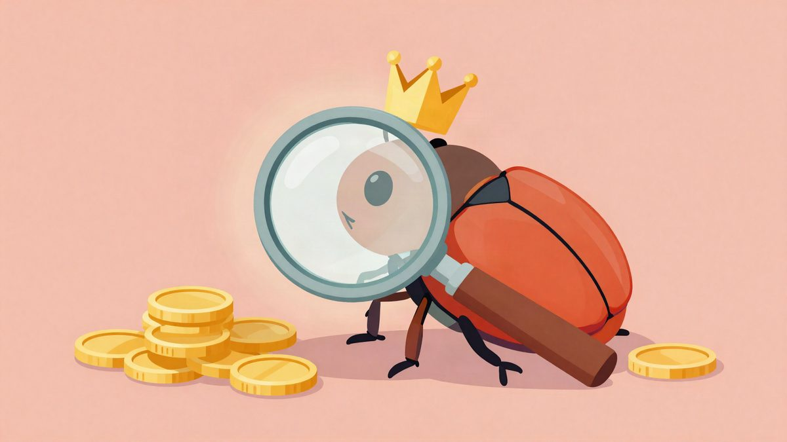

Googleov AI Overview proglasio je istraživačicu milijunašicom zbog njezine šale na X-u

Sigurnosna istraživačica Lyra Rebane zbog greške u bug trackeru dobila je pravo uređivanja i sama upisala nagradu od 1.333.337 dolara, a Googleov AI Overview danima je to prikazivao kao činjenicu. Šala s X-a stigla je do tražilice preko Community Notesa i automatskog podcasta. Pristup su joj oduzeli, a nagrada je vraćena na stvarnih 1000 dolara.
Googleov AI Overview danima je tvrdio da je sigurnosna istraživačica Lyra Rebane 7. studenoga 2026. dobila rekordnu nagradu od 1.333.337 dolara (oko 1,15 milijuna eura) za ranjivost u Chromeu. Nagrada nikad nije dodijeljena. Za taj bug Rebane je dobila 1000 dolara, a sedmeroznamenkasti iznos sama je upisala u polje bug trackera i potom se našalila na X-u.
Rebane je cijeli slučaj opisala na svom blogu 11. studenoga. Prema njezinu opisu, šala je do Googleove tražilice stigla u tri koraka.
Kako je nastala greška u trackeru
Rebane ima 14 CVE-ova u Chromeu. Još 2022. prijavila je Googleu logičku grešku u Background Fetch API-ju. Prema njezinim riječima, bilo je dovoljno namamiti žrtvu na web stranicu ili joj prikazati iframe pa da njezin preglednik postane dio botneta. Zbog neobičnosti buga prijava je godinama stajala bez odgovora. U veljači 2026. bug je označen kao ispravljen, a nagrada je iznosila 1000 dolara.
Kod ponovne provjere Rebane je u prijavi greškom upisana kao verifier. Običan autor prijave u Chromiumovu trackeru može samo čitati i komentirati, a izvršitelji, verifieri i suradnici mogu mijenjati polja, uključujući vrp-reward, u koje komisija upisuje iznos nagrade. Nova ovlaštenja primijetila je u studenom, slučajno prebacila prijavu na bot račun i shvatila da su njezine radnje vidljive. Tada je u polje upisala 1333337.
Zatim je na X-u napisala da je njezina ranjivost dobila najveću nagradu u povijesti Google VRP-a i priložila video u kojem sama mijenja vrijednost polja. Objava je u sat vremena skupila 600 lajkova. Nakon sat vremena u istoj je niti dodala pojašnjenje: snimka je stvarna, pristup za uređivanje dobila je greškom, a Google tu nagradu nije dodijelio niti će je isplatiti.
Put od šale do odgovora AI-ja
Nekoliko sati kasnije ispod objave se pojavio Community Note koji je napisao "eksperimentalni AI sudionik". Tvrdio je da je autorica sama uredila snimku zaslona. To nije točno, snimka je autentična, a promijenjeno je samo polje u trackeru. Rebane je javno prigovorila i bilješka je nestala.
Objava je potom ušla u Daily Vibe Casting, automatski AI podcast o popularnim objavama na X-u. Tamo je priča iznesena bez ikakvih ograda: istraživačica navodno prima nagradu od 1.333.337 dolara, najveću u Googleovu programu.
Googleov AI Overview je na upite o najvećoj nagradi za bug u Chromeu i na upite s imenom Rebane odgovarao da je njezino bogatstvo "službeno premašilo milijun dolara 7. studenoga 2026." Spominjao je "kritičnu ranjivost", "elitne vještine" i usporedbu s dotadašnjim maksimumom od 250.000 dolara. Prema skrinšotovima na blogu, uz njegov odgovor u rezultatima su bili izvorna objava i epizoda podcasta. Rebane navodi da je isto vidjela kod ChatGPT-a i Kagi Assistanta, a slične odgovore slali su joj i drugi korisnici.
Kad se ispod objave pojavio novi Community Note, Google je priču počeo nazivati šalom. Ipak, 14. studenoga Rebane je dopisala da AI sažeci Kagija, DuckDuckGoa i Binga i dalje tvrde da je milijunašica, a sad se pozivaju na njezin vlastiti tekst u kojem piše da to nije istina.
Zašto je to više od kurioziteta
Rebane slučaj smatra bezazlenim, jer nikoga nije htjela zavarati i nitko nije oštećen. Zabrinjava je to što se isto može ponoviti. Algoritam rangiranja X-a javan je, veliki računi i mreže botova mogu pojačati objave, a njezin je Community Note nestao nakon javnog prigovora, što bi, kako se boji, mogao iskoristiti i zlonamjerni akter. Dovoljno je u trendove progurati nekoliko objava s ciljanim ključnim riječima da završe u rezultatima pretraživanja, a odande u odgovoru AI-ja.
Razlika u odnosu na običnu tražilicu, prema njezinu mišljenju, leži u povjerenju. Malo tko će povjerovati jednoj objavi među rezultatima, ali AI Overview stoji na vrhu, izgleda kao gotov odgovor i ne pokazuje da je jedini izvor tvrdnje objava na društvenoj mreži. Tako to vidi autorica, a mjerenja povjerenja u pregledima u njezinu tekstu nema.
Slučaj ima i dvije tehničke pouke. Tko gradi pretraživanje s generiranjem odgovora (RAG) nad webom ili društvenim mrežama, mora provjeravati ne samo relevantnost pronađenog isječka nego i što je autor napisao nakon njega. Ovdje je demanti stajao u istoj niti, a podcast i sažeci ga nisu uzeli u obzir. Druga pouka tiče se pristupa, jer je sve počelo time što je vanjskom sudioniku dodijeljena uloga s pravom uređivanja službenih polja prijave, uključujući iznos nagrade.
Priča je formalno završena. Rebane su oduzeli pristup, a vrijednost polja vraćena je na 1000 dolara. Predstavnik Google VRP tima, prema njezinim riječima, napisao joj je da je bilo smiješno, ali da se polja trackera ne smije dirati. Javnog Googleova komentara o radu AI Overviewa u ovom slučaju nema.
Izvor: Tproger
Povezani članci
- Žena iz Pennsylvanije optužena je zbog CashApp računa otvorenog na njezino ime21. listopada 2026.
 Knight Capital je za 45 minuta izgubio oko 460 milijuna dolara zbog koda koji devet godina nitko nije pokrenuo18. studenoga 2026.
Knight Capital je za 45 minuta izgubio oko 460 milijuna dolara zbog koda koji devet godina nitko nije pokrenuo18. studenoga 2026.- SAD su zaustavile sve domaće letove više od četiri sata: otkazano preko 5.100 letova, Duffy traži 50 milijardi dolara13. studenoga 2026.